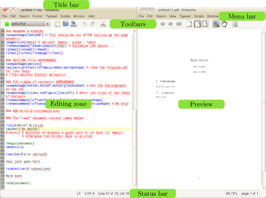
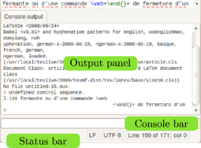
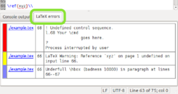

First steps
Let’s now see how to create a first document: for this you’ll need to type some text in the editor window of TEXworks. (LA)TEX is not a WYSIWYG1 software, so you’ll have to type the text and the instructions for formatting it and you’ll see the result only after “typesetting” the text. This looks a little bit dry, but one very quickly gets used to it and it is well worth the effort.
3.1 Interface summary
When one opens the editor, it shows a very sparse interface: a title bar, a menu bar, two small toolbars, a large typing zone (white) and, at the bottom, a status bar. We are in the source/editor window. If you have already typeset the document previously, the resulting .pdf will be shown on the right hand side in the preview window.
The first toolbar has a button to typeset and
an drop-down menu to choose the format for typesetting (we’ll
choose pdfLaTeX).
Knowing that the keyboard shortcut for typesetting is CtrlT (Mac OS X:
 T) and that we
almost never change the format, we could even hide this toolbar.
The selection of a format for compiling can also be changed through
the Typeset menu.
T) and that we
almost never change the format, we could even hide this toolbar.
The selection of a format for compiling can also be changed through
the Typeset menu.
The second toolbar provides the standard functions: New document, Open, Save | Undo, Redo | Cut, Copy, Paste | Search, Replace.

3.2 Creating a document
3.2.1 Writing the document
As an example of the use of TEXworks, we will work with LATEX, but any other TEX system is possible. In particular, if you need to use some special fonts2—a mandatory font for an official template, non-Latin alphabets, etc.—the XETEX system is very powerful.3
Let’s create now our first document. Enter the following text exactly as shown. To show some of the features of TEXworks/LATEX, it is in French intentionally.
\usepackage[utf8]{inputenc}
\usepackage[T1]{fontenc}
\usepackage{geometry}
\geometry{a4paper}
\usepackage[frenchb]{babel}
\title{Premier document}
\author{Un TeXnicien}
\date{}
\begin{document}
\maketitle
Voici un texte accentué en français!
\end{document}
Save the file in a folder for test documents (e.g., <home>\TeXworks_tests); call the file first.tex. Note that it should have a .tex extension.
3.2.2 Typesetting the document and viewing it
Next we start typesetting4 by clicking the green button or by CtrlT (Mac OS X: T).
A new panel opens between the typing area and the status bar: the output panel, labeled Log; everything LATEX is doing is displayed there5. When LATEX finishes this panel disappears (if there no error occurred) and a new window will appear; in this new window, the Preview window, you can see a page with a title “Premier document” followed by the name of the author “Un TeXnicien”, both centred, the text “Voici un texte accentué en français !”, and a page number at the bottom centre.
Notice that the mouse cursor is like a magnifier in the new window. If you press (and hold) the left button of the mouse you can see the text under the magnifier much bigger (it is a magnifier, isn’t it!); you can move the magnifier and so inspect the text in detail.
To go back to the source, you can just click in
its window or better use Ctrl’ (Mac OS X ’). This shortcut
toggles between the two windows. See also section 5.1
to automatically move to a
specific location in the output from the source or vice versa.
3.2.3 The work of LATEX
Let’s shortly analyse the result to understand what LATEX did and why, now. Introductions and full tutorials can be found on the internet: see for example lshort6 which should be installed as part of your TEX distribution, and is also available from CTAN.7
First, we ask to create a document of the article class: this defines the global layout of the document.
Next, we say that the input document (the source) is saved with the Unicode encoding utf-8 and that it may contain characters which are not present in the standard ASCII without accents. We also want to use an output encoding T1 (the modern TEX encoding); we also want an A4 document and not the default US letter size. Finally, we make it clear that the typography should follow the French rules using the babel package.8 Those general instructions for the work are done by packages called with options.
Lastly, we finish the declaration part of the document, the preamble, giving the title, the author, and the date of the document; here we specify no date.
Next comes the body of the document, which describes the actual content, between the lines \begin{document} and \end{document} (these are LATEX commands).
Let’s do some experiments to show the effect of these instructions. For this, we put a % in front of the instructions; the % and everything after it will be considered as comment, which will be ignored by LATEX.9
Comment out the line \usepackage[utf8]{inputenc}, and typeset the file. You should see that the accented characters are now displayed incorrectly in the preview window. If, in addition, you also comment out the line \usepackage[frenchb]{babel}, LATEX will give an error. Just hit to continue the typesetting.
After these experiments, let’s modify the text as follows:
\maketitle
\tableofcontents
\section{Petite démonstration}
Voici un texte accentué en français!
Suite du texte entré après avoir fait un retour chariot. Dans
l’éditeur on peut demander un passage automatique à la ligne
du texte saisi; mais le numéro de ligne n’est incrémenté que par un
retour chariot.
Nouvelle ligne en passant une ligne dans la source: c’est la
manière d’indiquer un changement de paragraphe.
\end{document}
Note that entering only one carriage return doesn’t create a new paragraph. In LATEX, one has to have an empty line for that. In TEXworks, the line number of the source (on the right in the status bar) numbers the lines created with carriage return, not the wrapped lines.
3.3 And when errors occur?
When you create a document for typesetting with LATEX, you cannot avoid making mistakes: forgetting a closing brace or an \end{} command to close an environment, using mathematical commands without switching to mathematical mode, etc. When you compile and there is an error, LATEX stops, giving you a chance to deal with the problem. This is shown by the stopping of the scrolling action in the output panel, and an error message being displayed, with LATEX waiting for an instruction to know what it should do. One sees the typing cursor in the line between the output panel and the status bar: the console bar.

The error message is on many lines, for example like this:
l.168 ... fermante ou d’une commande \veb
+\end{}+ de fermeture d’un...
?
LATEX says that it doesn’t recognize the command name, sometimes suggests to see the manual or to type h (plus ) for help, points to the line number where it noticed the error10 (here 168), and shows the place of the error at the cut of the line (here at \veb). Finally, it shows that it waits for an action from us by displaying a single question mark.
There are different possible actions:
- Type
 and
ask to continue as if nothing happened; sometimes this allows to
finish compiling, but there will be an error in the result.
and
ask to continue as if nothing happened; sometimes this allows to
finish compiling, but there will be an error in the result. - Type hto ask for help; this help is not always clearer than the error message, but often gives a clue.
- Type ito tell LATEX that we will propose a replacement text. Enter the text followed by ; it will be used, beginning at the start of the error, but you should correct the source afterwards as LATEX never changes that.
- Type xto stop compilation. This is the
traditional (LA)TEX way to kill a typesetting
process.
We can also kill the typesetting by repeating the action used to start it: the green typesetting button will have changed to a red one with a white cross . By clicking on that button or by hitting CtrlT (Mac OS X:
T) again, the
LATEX process is terminated. The output panel
is still visible and so one can still see the error message.
You should note that sometimes an error appears far from its actual position. For example, when opening an environment but not closing it, LATEX doesn’t see the error before it encounters another end of environment without closing of the first one. The error is often only picked up at the \end{document} command, which shows that another environment was not closed!
Sometimes, an error still occurs during subsequent runs of (LA)TEX even after it was corrected in the document. This can happen because (LA)TEX creates a number of intermediary files which can still contain the original, erroneous code. Therefore, it is advisable to remove those files after fixing an error. TEXworks provides a command to facilitate this—see section 5.6 .
To help you in finding and fixing error (at least if you are using LATEX), TEXworks comes with a small script that extracts all errors, warnings, and other noteworthy messages from the console output and presents them to you in a simple, tabular form.

Here, you see a list of LATEX messages, color-coded and sorted by severity. Red represents errors, yellow indicates warnings, and blue stands for over- and underfull box warnings. Next to the colour bar, you see the name of the file in which the error was detected. Next to that, you see the line number (if the script was able to determine that), as well as an excerpt from the console output telling you what the error was. Moreover, the filename is a link which will take you to the file (and, if a line number could be determined, also the line) where LATEX reported the error. Hopefully, you can quickly fix any errors that may occur this way.
In case you are not using LATEX, this script may be of little use, particularly if the console output is formatted differently. In this case, you can simply disable the error parsing hook script (see section 6.2 ).
3.4 Changing TEXworks parameters for convenience
If the default font of the editor doesn’t suit you, it is possible to change it from Format→Font… by selecting a new one in the dialogue box which appears. This change will apply only to the current window, and until TEXworks is restarted.
From the Typeset menu or from the drop-down on the Typesetting tool bar, you can change the compilation format. Again this change will only be temporary and for the current document.
To have permanent changes, you need to change the preferences through the Edit→Preferences… menu item, using the Editor tab for the font and the Typesetting tab for the compilation format: the default format is at the bottom of the tab.